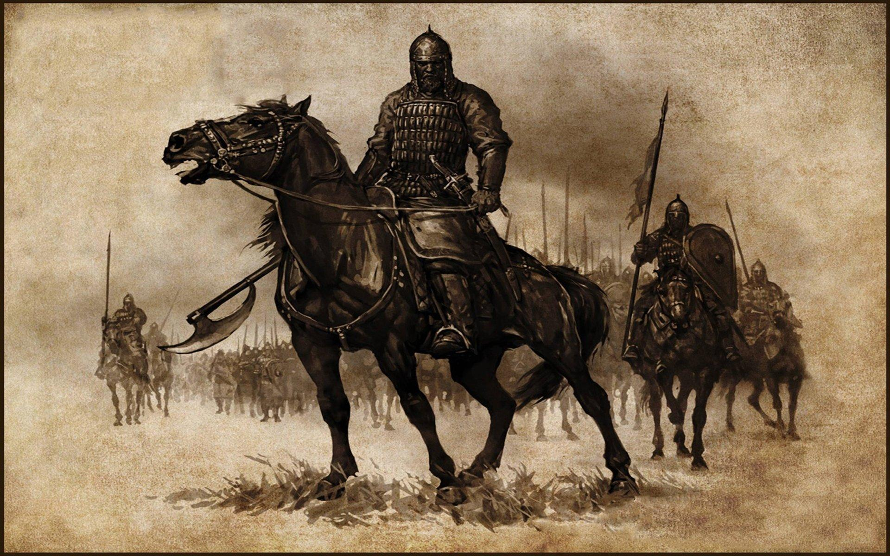

The Warband
"Day 48 - We are running out of food, we are running out of arrows, we are running out of men. Hope? Haven't run out of that one just yet. Lord Benyard is on his way with a company 200 strong and filled with some of the most well-trained troops that his land can offer.
That was what the letter said when I received it 20 days ago, he still isn't here. He may not even be alive. We have been holding the city of Dhirim against the Rhodok horde as they lay siege against the city walls. Every morning they come with their ladders and their siegeworks and every morning we rain arrows and burning tar on them. If there's a higher power, He can see that we have endured, but for how much longer can we endure against the barbarians?"
— Commander's log, Siege of Dhirim, Spring 1257 A.D.
Mount & Blade: Warband is a 2012 videogame that offers an experience that can hardly be found in other titles and has grown to have its own cult following that still keeps the game alive to this day, more than a decade after the game came out.
The concept is simple: it is the 13th Century and you are the leader of a band of soldiers, what you do or how you do it is entirely up to you. You can be a mercenary, lending your sword to whoever has the deepest pockets. You can choose to set up industries accross the land and become a mercantile force so strong that you get to decide the tides of war and politics through commerce. You can dethrone a head of state and embark on a campaign of domination against the other nations. Or you can roam the land as a bandit, stealing from peasants and pillaging towns.
The series has had 4 entries since its inception back in 2008, with its latest addition being the War Sails expansion released in November 2025 for the latest entry in the series, Mount & Blade: Bannerlord. Initially, the series began in the garage of TaleWorld founder Armağan Yavuz who, with the help of his wife, began working on a yet untitled project that aimed to combine historical fiction with the depth of strategy games such Sid Meier's Pirates. The project grew to become a full production that despite its small team, it managed to shipped a full product.
It tanked.
Sales were low and critics gave it an average rating of 6/10, yet the players made a small but passionate community surrounding the game thanks to its easy moddability. A few years later Mount & Blade: Warband would release, it was a remake of the first game with many mechanics and systems reworked to add more depth and freedom, as well as a new Persian-themed faction was added. The success of both critically and financially of this remake would grow to become one of Paradox's biggest accomplishments of the 2010s.
Now that players could influence economies and raise their own kingdoms, the developers had to come up with something new to push their brand to new horizons and that came in the shape of the Napoleonic Wars expansion which changed the setting to the 18th Century, and later came the Viking Conquest expansion which recreated the Danish occupation of the British Isles in the 9th Century.